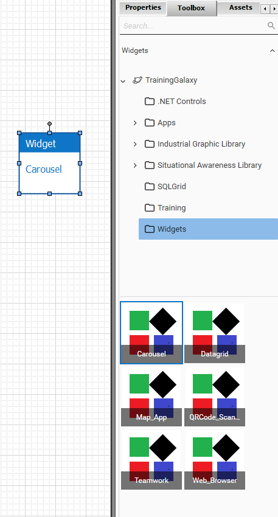
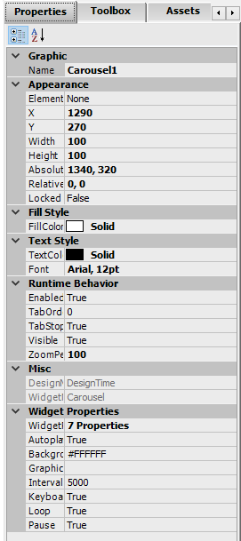
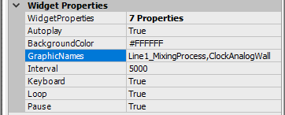
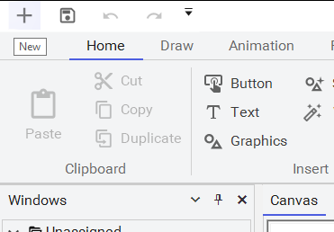
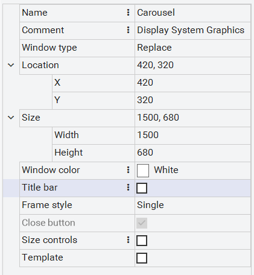
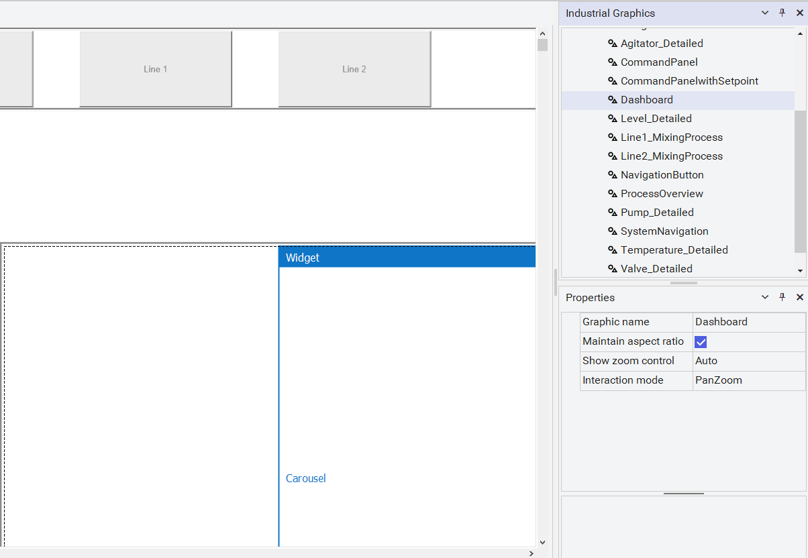
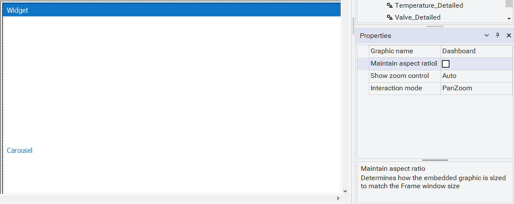
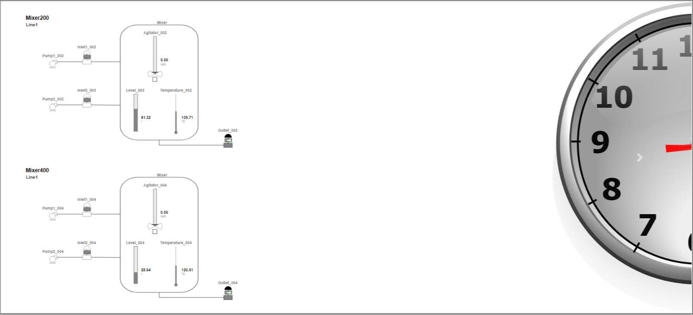
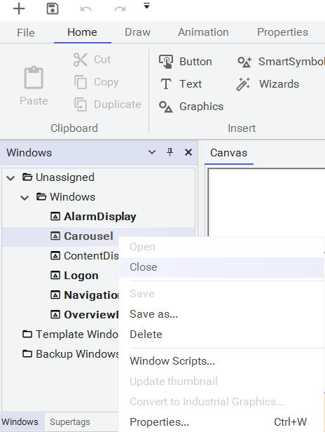
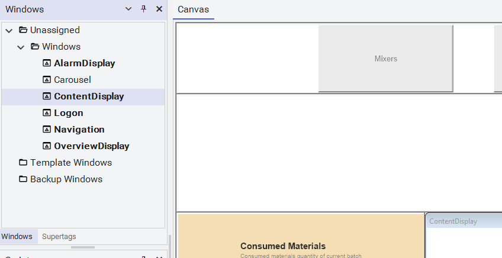

Training manual stock photo of a diverse group of four people working at computers in a library or collaborative learning space, with a young Black woman smiling in the foreground at a CRT monitor
Module 4 — Widgets | Pages 281–292
Do Not Copy 4-3 4-5
Do Not Copy 4-2 AVEVA™ Training Module Objectives Describe InTouch for System Platform support for HTML5 Widgets Use the Carousel widget
Do Not Copy 4-3 AVEVA™ InTouch for System Platform 2023 Introduction Widgets are small components that can extend the functionality of InTouch. HTML5 Widgets are a self-contained code block based on website design that can be imported into InTouch without changing any of its features. The power of this has been added to InTouch which now acts as a container for HTML5 Widgets both in design time and runtime. Widgets are most frequently used to provide on-screen user interface elements that ingrate with other platforms and data sources. A widget can be run in WindowViewer with consistent placement and user interface. For example, social media, weather, RSS or podcast widgets. By default, the following widgets are available under the Widgets folder in the Graphics tab: Carousel Datagrid MapApp QRCode_Scanner Teamwork Web_Browser Importing HTML5 Widgets For use in InTouch for System Platform, a web widget is imported from the IDE using Galaxy | Import | Visualization | Web Widgets. The file format is Custom Widget Package (.cwp), which includes HTML5, CSS, and Javascript files. After the widget has been imported, it can be viewed on WindowViewer. Additionally, design time properties determine the behavior or the widget at runtime. This section describes using HTML5 widgets in your InTouch for System Platform application and introduces the Carousel widget.
Do Not Copy 4-4 AVEVA™ Training Carousel Widget A carousel widget allows you to cycle through Industrial Graphics like a carousel without any user input. It also supports user selection of the previous or next step in the carousel. For examples, this widget can be used to display dashboards, alerts or alarm information on large monitors on the plant floor. Carousel Properties In addition to the standard graphics properties, you can also configure properties specific to the widget, under Widget Properties in the Graphic Editor. Name Description Autoplay If the Autoplay property is set to true, the carousel widget will automatically start on load. If it is set to false, the user must select the next item to start the carousel. The default value is True. BackgroundColor The background color for the widget. GraphicNames A comma separated list of Industrial Graphics the carousel will display in runtime. Interval The amount of time delay (in milliseconds) between automatically cycling an item. Keyboard If the Keyboard property is set to true, the carousel will respond to keyboard inputs. The default value is True. Loop If the Loop property is set to true, the carousel will cycle through the graphics continuously, else it will stop after a single cycle. The default value is True. Pause If the Pause property is set to true, the carousel will pause the cycling of the graphics, when it detects the mouse hovering or a touch down event. The graphics will resume cycling when the mouse is moved away. The default value is True.
Do Not Copy 4-5 AVEVA™ InTouch for System Platform 2023 Introduction In this lab, you will create a dashboard symbol and embed and configure the Carousel widget. Then you will display this dashboard at runtime. Objectives Upon completion of this lab, you will be able to: Use widgets Display graphics in the Carousel widget
Do Not Copy 4-6 AVEVA™ Training Create the Dashboard Symbol First, you will create a Dashboard symbol and embed and configure the carousel widget. 1. In the IDE, on the Graphics tab, in the Training toolset, create a new symbol named Dashboard, and then open it for editing. 2. From the Toolbox tab, embed Widgets\Carousel.

Do Not Copy 4-7 AVEVA™ InTouch for System Platform 2023 3. In Properties, scroll down to locate the Widget Properties. 4. In GraphicNames, enter: Line1_MixingProcess,ClockAnalogWall The graphic names listed here will display in the widget at runtime. 5. Save and close and check in the graphic.


Do Not Copy 4-8 AVEVA™ Training Create a New Window Next, you will create a new window to contain the carousel widget. 6. In WindowMaker, click the New (+) button. 7. In New, ensure Frame window is selected. 8. Configure window properties as follows: 9. Click Create. Name: Carousel Comment: Display System Graphics Title bar: Unchecked


Do Not Copy 4-9 AVEVA™ InTouch for System Platform 2023 Now, you will embed the Dashboard symbol in the Carousel window. 10. In the Carousel window, embed the Dashboard symbol. 11. In Properties, uncheck Maintain aspect ratio.


Do Not Copy 4-10 AVEVA™ Training Test in Runtime Finally, you will test the new window in WindowViewer. 12. Click Runtime. After a few moments, the carousel will automatically scroll to display your graphics. 13. Wait until the carousel shows the mixer graphics, then hover your mouse over the carousel to pause automatic scrolling with the mixer graphic showing. 14. Move your cursor to the left or right side of the carousel until the cursor changes to a pointing hand, and then click to advance the carousel. 15. Click Development! to return to WindowMaker.

Do Not Copy 4-11 AVEVA™ InTouch for System Platform 2023 16. In Windows, right-click Carousel and select Close. 17. In Windows, double-click ContentDisplay to open it.


Do Not Copy 4-12 AVEVA™ Training
Review the sections above for the main topics, step-by-step procedures, and important configuration details.
This is part of the InTouch HMI layer, which integrates with Application Server's Galaxy for a complete visualization solution.
Module 4 — Widgets. AVEVA InTouch for System Platform 2023 Training.
Next: Lesson L24 — Alarming Overview + Lab 12